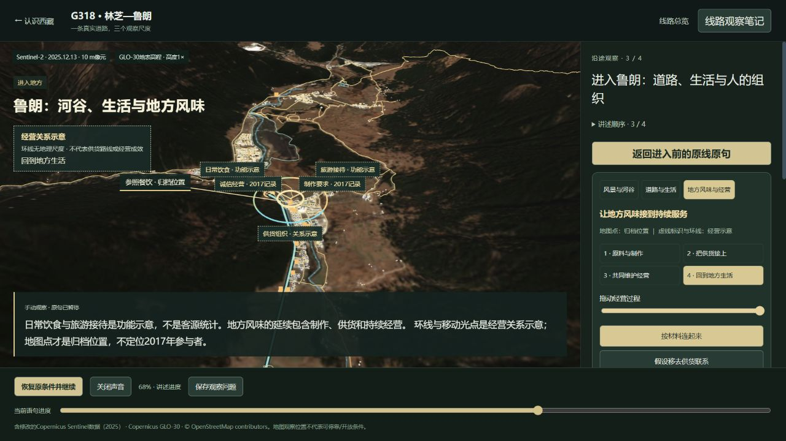
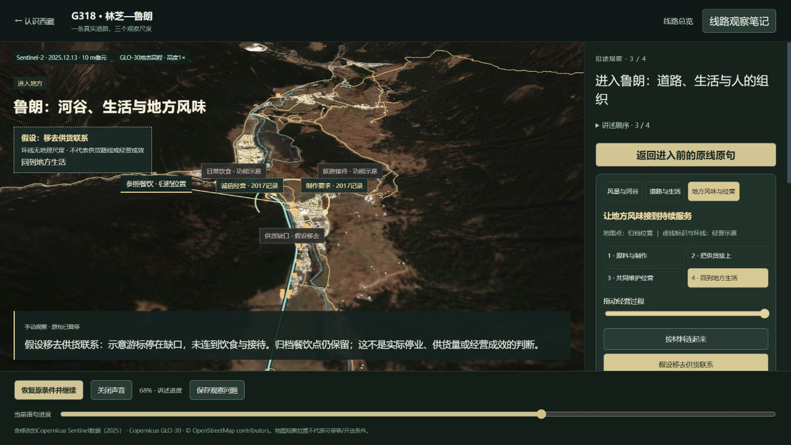

2026-10-19 · 原地物、原录音上的关系观察
地方风味，
怎样接到持续服务？
在同一地图上，从有据的制作要求、组织供货与诚信经营措施，读到地方饮食和旅游接待的功能联系。操作改变经营示意，归档地物保留；不把示意当成历史供货路线或实际经营结果。
真实记录与原理示意分开
2017年度运营材料记录了活鸡制作要求、引进养殖企业组织供货、商户诚信经营承诺。这些是当年的措施记载，不能据此判断每家商户怎样执行或取得多少收益。地图参照则取自现有归档餐饮节点，不表示当年参与者。
环线、游标与“日常饮食／旅游接待”光点是功能关系示意，没有地理尺度，也没有供应商位置、运输线路或客流数量。查看资料、节点和示意范围。
操作能看见什么
- 沿四个步骤拖动：制作、供货、经营标记逐步出现，最后接到饮食与接待功能；原录音同样按逐字进度推进。
- 在相同步骤与参照点，切换“按材料连起来／假设移去供货联系”：缺口、游标和功能光点会改变；地图中的餐饮点保留，不表示实际停业。
- 切换现有原线附近、北侧、南侧餐饮归档点：同一地图自然移动到新参照，保留相同关系假设。参照点不是新增景点，也不是商户推荐。
- 保存计划刷新后，步骤、假设、参照和原句能恢复；继续讲述会回到原生条件，返回原线保留进入前的路段和语句。


实际核查与停止范围
本次观看复核补强了供货缺口的停止标记，并在进入总结后保留原线返回入口。已再次实际检查保存刷新、恢复原句和总结返回。查看本次两处修复与复核记录。
已实际检查原生供货词、后续功能讲述、完整与缺口对照、参照切换、保存刷新恢复，以及第48.1公里／原句43%的原线返回。检查发现并修复了标签相互遮挡，以及进入后立即拖句把主动暂停误报为播放失败的问题。
51项相关检查、类型检查及构建通过。六章、全部录音和152.820秒首段时长未变；没有新增地点或实体模型。实际画面检查是离散观察，没有系统音频回听，也不代替首次观看者理解验收。本轮到此收口。